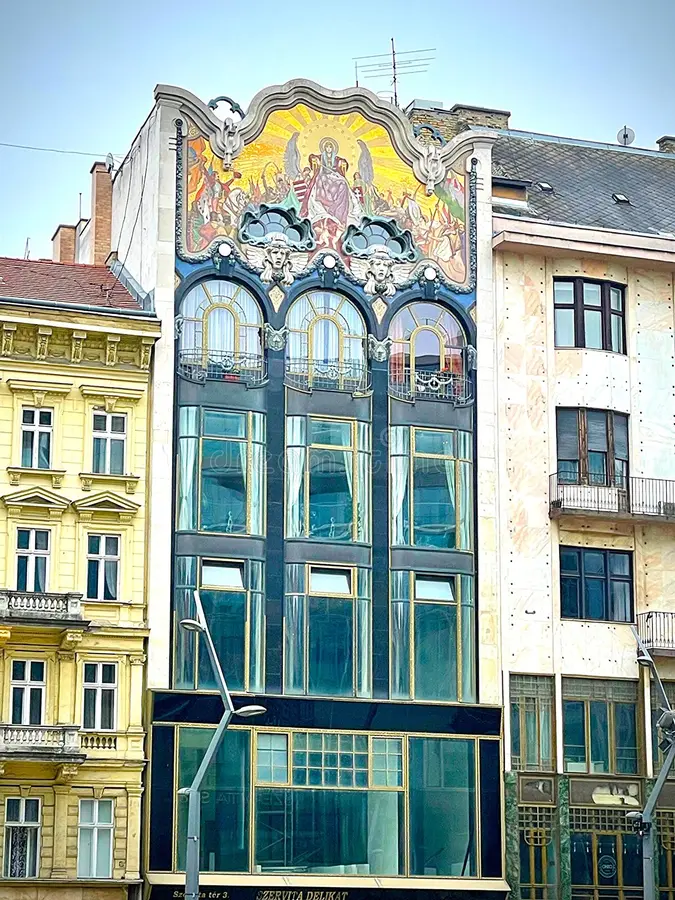
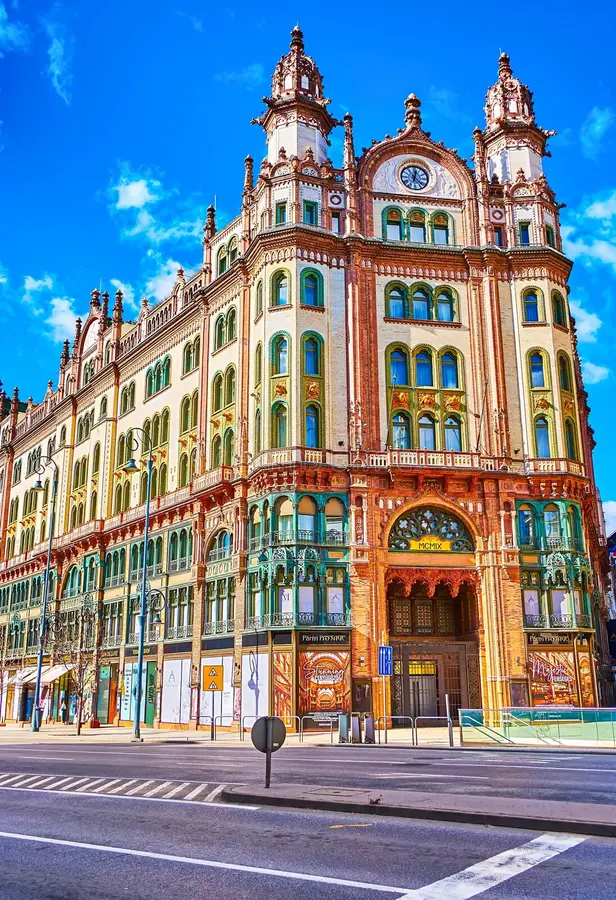
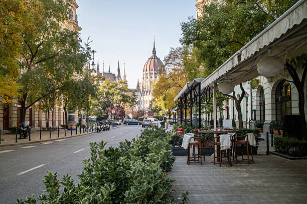

UrbanWalks
Discover Beautiful Walking Routes
Discover Beautiful Walking Routes
This gallery presents examples of visually appealing streets, buildings, and urban environments that make walking through the city enjoyable.




